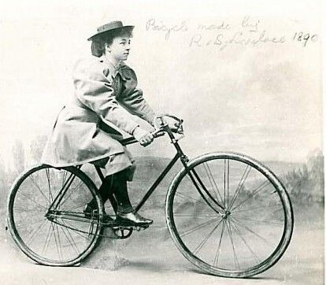

|
previous / next column
A PHYSICIST WRITES . . .
(March 2017)
I remember hearing a short radio programme last year on the history of the bicycle. It made such an impression on me that I have just now searched it out on iPlayer and listened to it again. The 'safe-to-ride' machine that we know today dates from around 1885, when the penny-farthing design was superseded: the two wheels became the same size, and the rider was able to reach the ground with his or her feet.

I ought to emphasize the 'her', because cycling became liberating for women, in particular causing their customary attire to change from a long skirt and petticoat to a jacket and pantaloons! And it's arguable that the female adoption of the bicycle gave strength later to the rise of the suffragette movement and all that followed...
In the 1890s there were significant consequences for everyone, in fact, when the price of a bicycle dropped enough for most people to be able to afford one. Barriers of class and gender broke down, between people finding themselves alongside each other on bicycles. Those seeking work could go much further (relatively speaking) for it, than they could on foot. And our country's gene-pool was similarly given a revitalizing stir, since you might well now encounter your life-partner at a greater distance from home than before! All this history I learned from cyclist-historian Rob Penn who was interviewed in the programme.
But what impressed me most was a recent medical story: in 2003, an American lady who suffered quite severely from Parkinson's disease was encouraged by her neuro-surgeon - a keen cyclist - to join, with her husband, a cycling group who were setting out to ride across their home state, Iowa (to raise awareness of Parkinson's).
This lady was not a regular rider herself, and so she took the rear seat of a tandem and her husband the front. But he wasn't used to tandems, and apparently when they first stopped he got off quite forgetting his wife was still on! She took a tumble, and so the surgeon suggested that he occupy the front seat for the day. And he favoured a rather high rate of pedalling...
Extraordinarily, by the end of the day her Parkinson's symptoms had noticeably reduced, and by the end of the week-long ride (with the surgeon still leading) they had almost totally disappeared. And the improvement was not at all limited to her legs. Thus it was discovered that fairly high-intensive repetitive 'assisted' exercise could be of great benefit to some Parkinson's patients at least, with effects that lasted for days or even weeks after a series of sessions. The mechanism seems to be that the exercise sends signals to the brain that cause it actually to restore the full connectivity between its different regions.
Which only adds to my astonishment at the brain's capabilities and its ways of working. This is a feeling that I've tried to reflect ever since I started writing these columns. Very early on (14 years ago now!) I pointed out that riding a bicycle - unlike almost any other skill I can think of - is an entirely automatic thing, from when you start to learn to after you've finally got the hang of it: if at any stage you try to think about it, you will very likely come off. I doubt if more than a small fraction of cyclists are aware that when they want to turn left, for example, they must momentarily steer to the right (in order to tilt left and then stay balanced on the curve). Yet their subconscious brains know exactly what to do.
The question in my mind is how long this knowledge is retained, because it must be at least 40 years since I last rode a bike, and I am increasingly being urged (see below) to try the saddle again. Though while half of me is keen to know the answer to my question, the other half fears the embarrassment of falling off...
Looking at pictures of bicycles from 130 years ago, I am amazed at how little the basic design has changed, even with all the technical advances and options added to it now. One of the most recent of these is battery power, which has surely brought the liberation of open-air, day-trip journeying to yet more people.
Which leads me to a good-news tale about my daughter, who recently married a cycling enthusiast. She had not ridden a bicycle for twenty years or more (mostly for reasons of back trouble) - until last year, when she decided to invest in an electric bike. This has given her wonderful freedom to explore cycle (and cyclable) routes in town and country, not least all around N London where they live. The pair of them can now ride together anywhere (having fitted a rack for the two bikes to their car). And as I hinted above, I have been under gentle pressure to try the machine myself! I'll let you know the outcome, maybe.
Peter Soul
previous / next column
|